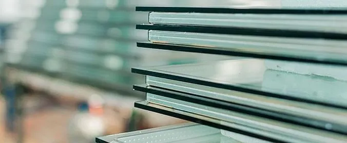
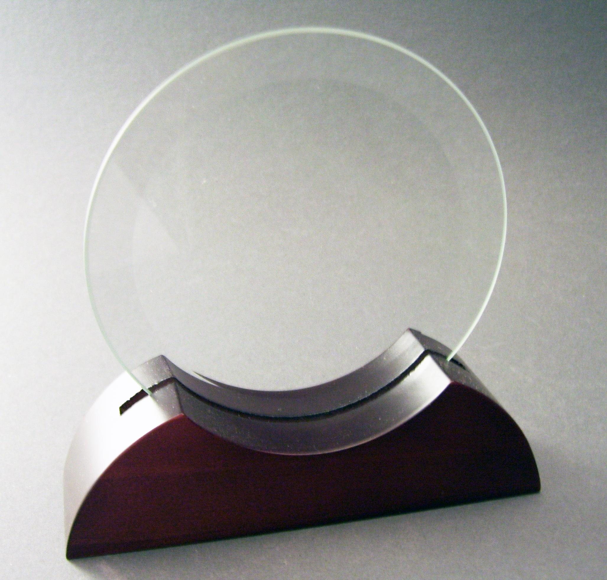

Venha conhecer o nosso carro-chefe, a inovadora película regenerativa! Com sua alta tecnologia, ao objeto em que for aplicado ser lesionado, a película com sua camada regeneradora, consegue ceder e multiplicar partículas para o objeto voltar a seu estado íntegro, sem danos ou arranhões! Venha conhecer!
Película Regenerativa

A nossa película protetora e regenerativa, tem como foco principal a restauração e reconstrução do dispositivo após alguma danificação ou quebra superficial. Logo, a película sendo de um material maleável porém resistente, é uma ótima solução para a resolução de problemas cotidianos, como derrubar o celular por acidente e trincar a tela, deixar um espelho cair no chão e entre outros, visto que, quando é ocasionado um dano ao aparelho e a película está aplicada, dependendo da profundidade do dano, a camada protetora gerada pela película é capaz de restaurar e suprir os danos sofridos para uma integridade do aparelho.
Quem somos

Somos uma empresa que zela pela qualidade e eficiência, no qual colocamos isso em todos os produtos que produzimos, nosso compromisso é com o consumidor, e não deixaremos que ninguém saia insatisfeito!